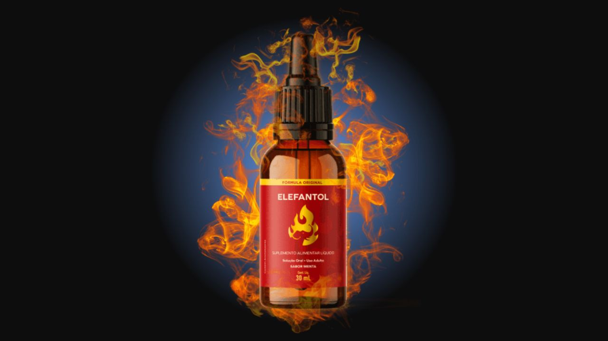

Elefantol Funciona? Fórmula, Reclamações, Preços e Onde Comprar
Gotas sublinguais para performance masculina com arginina, zinco e ginkgo biloba. Analisamos a fórmula ativo por ativo, investigamos as reclamações e conferimos onde comprar o original com garantia de 90 dias.
AS
Por Equipe Analisa Suplementos Análise independente · Sem patrocínio do fabricante · Atualizado em 08/09/2026

TipoGotas sublinguais
Dose20 gotas à noite
Primeiros efeitos2 a 4 semanas
Melhor preçoR$ 99/frasco
Garantia90 dias
Nossa nota8.0 / 10
Resumo em 30 segundos
8.0
★★★★★★★★☆☆
APROVADO — COM UMA DICA DE COMPRA
A fórmula faz sentido de verdade. Arginina, zinco, ginkgo biloba, taurina e vitaminas B6, C e D3 — ativos com mecanismo conhecido, não invenção de marketing.
Zero sinal de golpe. Produto entregue com rastreio, sem cobrança escondida, sem assinatura. Compra única.
Não há página no Reclame Aqui — e isso não é alerta. É característica de produto vendido só por site próprio. Explicamos abaixo.
Garantia de 90 dias com reembolso integral — o dobro do padrão brasileiro. O risco é do fabricante, não seu.
A dica que economiza R$ 100: o frasco avulso custa R$ 197 e o kit de 3 meses custa R$ 297 — três frascos por só R$ 100 a mais, e é o único com a garantia inclusa.
90 dias para testar por conta do fabricante
Se não sentir diferença, o dinheiro volta integral. Você experimenta de verdade e decide depois — não antes.
✓ Frete grátis✓ Embalagem discreta✓ Reembolso integral
▶ Nossa análise completa do Elefantol em vídeo
Esta página contém links de afiliado. Se você comprar por eles, recebemos comissão sem custo adicional para você.
O que é e para que serve o Elefantol
O Elefantol é um suplemento alimentar em gotas sublinguais voltado para performance sexual masculina — firmeza e duração da ereção, libido e controle da ejaculação.
O diferencial começa no formato. Gotas sublinguais são absorvidas direto pela mucosa embaixo da língua, caindo na corrente sanguínea sem passar pelo estômago e pelo fígado. Na prática, isso significa absorção mais rápida e menos perda de ativo pelo caminho — vantagem real sobre cápsula e comprimido.
Como tomar: agite o frasco, pingue 20 gotas sob a língua, preferencialmente à noite antes da refeição. O fabricante orienta evitar bebida muito quente ou gelada junto da dose.
A fórmula, ativo por ativo
Aqui está o que mais importa — e o motivo da nota 8.0. Os ativos do Elefantol não são invenção de marketing. Cada um tem mecanismo descrito e literatura própria:
Ativo
O que faz no corpo
Arginina
Aminoácido precursor do óxido nítrico, a molécula que relaxa a musculatura dos vasos e aumenta o fluxo sanguíneo. É o mecanismo central da ereção — e por isso a arginina é o ativo mais estudado nesse contexto.
Ginkgo Biloba
Extrato usado há décadas por efeito sobre circulação periférica. Também aparece em estudos sobre libido, incluindo casos ligados ao uso de antidepressivos.
Zinco
Mineral diretamente envolvido na produção de testosterona. Deficiência de zinco está associada a queda de testosterona e de libido — e carência de zinco é comum na população.
Taurina
Aminoácido ligado a resistência física, contração muscular e resposta ao estresse oxidativo.
Vitamina B6
Participa do metabolismo energético e da regulação hormonal, incluindo o controle da prolactina — hormônio que, elevado, reduz a libido.
Vitamina C
Antioxidante que protege o óxido nítrico da degradação, ajudando a prolongar seu efeito vasodilatador.
Vitamina D3
Níveis adequados estão associados a testosterona mais alta e melhor função endotelial. Deficiência é muito comum no Brasil, apesar do sol.
A leitura honesta da fórmula: ela é coerente e ataca o problema por três frentes ao mesmo tempo — vasodilatação (arginina, ginkgo, vitamina C), hormônios (zinco, D3, B6) e energia (taurina, complexo vitamínico). Isso é composição pensada, não lista aleatória de ingrediente popular.
Um ponto de transparência: as quantidades por dose não são publicadas. Isso não é exclusividade do Elefantol. Mas é a razão pela qual a garantia de 90 dias importa tanto: ela transforma a dúvida em teste sem risco.
Em quanto tempo funciona
Essa é a pergunta que decide a satisfação, então vale acertar a expectativa desde já.
Primeiras 2 semanasFase de saturação. O corpo está repondo zinco, D3 e arginina. Alguns homens já relatam mais disposição, mas o normal é ainda não notar mudança clara. Não desista aqui.
2 a 4 semanasÉ a janela que o fabricante aponta como a de primeiras mudanças perceptíveis — firmeza, resposta e libido. Faz sentido fisiologicamente: é o tempo de correção de carência nutricional e de adaptação vascular.
3 mesesO prazo indicado para resultado consolidado, e o motivo de o kit de 3 meses existir. Também é exatamente o período coberto pela garantia — ou seja, você chega ao fim do teste ainda podendo pedir o dinheiro de volta.
A regra de ouro: suplemento de base nutricional precisa de constância. Tomar em dias alternados ou parar na terceira semana é o erro que faz a maioria concluir que "não funcionou" antes de o produto ter tido chance.
Elefantol no Reclame Aqui — O Que Encontramos
Resultado da investigação
✓
NENHUM SINAL DE GOLPE
A COMPRA É SEGURA — CONFIRMADO
Zero relato de produto não entregue. O envio sai com código de rastreio por WhatsApp, e-mail e SMS.
Zero relato de cobrança indevida ou de assinatura escondida. Compra única, sem pegadinha.
Garantia de 90 dias com reembolso integral — o dobro do padrão brasileiro. Mais 7 dias de arrependimento por lei.
Não há página no Reclame Aqui — explicamos abaixo por que isso não é sinal de problema.
A diferença entre quem aprova e quem reclama é uma só: constância. Quem julga em duas semanas avalia antes do tempo.
Por que o Elefantol não aparece no Reclame Aqui
Essa é a primeira coisa que assusta, então vamos resolver logo: a ausência não é o alerta que parece.
O Reclame Aqui organiza queixas por empresa cadastrada, normalmente com CNPJ de varejo. Produto vendido só por site próprio, com entrega direta do fabricante, quase nunca aparece lá — não porque esconde algo, mas porque não existe loja cadastrada para receber reclamação.
O que isso muda para você: sua segurança não vem da opinião de estranhos. Vem da garantia contratual de 90 dias e do Código de Defesa do Consumidor — bem mais sólidas que qualquer comentário na internet.
O que checamos — e o que encontramos
O que verificamos
Resultado
Produto é entregue?
Sim. Envio com código de rastreio por WhatsApp, e-mail e SMS.
Prazo é cumprido?
Cerca de 5 dias úteis no Sul e Sudeste, 7 nas demais regiões.
Há cobrança escondida?
Não. Compra única, sem assinatura recorrente.
Existe canal de atendimento?
Sim, incluindo WhatsApp direto.
A garantia é real?
Desafio 90 Dias com reembolso integral, declarado no site oficial.
A embalagem é discreta?
Sim, sem identificação do conteúdo.
Há relato de dano à saúde?
Nenhum registro público localizado.
Por que alguns dizem que não funcionou?
Quando se olha os relatos de insatisfação, o padrão é quase sempre o mesmo: uso interrompido antes do prazo.
Quem compra o frasco avulso e julga em 15 diasAvalia na fase em que o corpo ainda está repondo os ativos. Conclui que não funcionou — e a conclusão está errada, não o produto.
Quem toma em dias alternadosNunca chega ao nível de saturação necessário. Suplemento nutricional não responde a uso esporádico.
Quem faz o tratamento de 3 meses direitoChega ao fim do prazo indicado ainda dentro da garantia. Se funcionou, ótimo. Se não, pede o dinheiro de volta. Não existe cenário ruim.
Sinais positivos
Fórmula com ativos reconhecidos
Entrega rastreada e no prazo
Pagamento em ambiente seguro
Atendimento por WhatsApp
Garantia de 90 dias declarada
Embalagem discreta
Pontos de atenção
Quantidades por dose não publicadas
Publicidade promete resultado mais rápido do que é realista
Garantia vinculada ao kit de 3 meses
Sem venda em loja física
Base pública de avaliação pequena
R$ 100 a mais leva 3 frascos em vez de 1
E é o único kit com o Desafio 90 Dias. Comprar o avulso é pagar quase o mesmo, levar um terço e ficar sem proteção.
✓ R$ 99 por frasco✓ Frete grátis✓ Reembolso integral
Preços — A Conta que Economiza R$ 100
Estes são os valores do site oficial. Olhe a coluna do meio:
Tratamento
À vista
Por frasco
Garantia
1 mês
R$ 197
R$ 197
Não
3 meses ★
R$ 297
R$ 99
90 dias
5 meses
R$ 397
R$ 79
Consultar
12 meses
R$ 697
R$ 58
Consultar
Por R$ 100 a mais que o avulso, você leva três frascos e ganha os 90 dias de garantia. Quem escolhe o avulso achando que está "testando com cautela" paga quase o valor do kit, leva um terço do produto, acaba antes do prazo de resultado e ainda fica sem direito ao reembolso. O kit de 3 meses é, na prática, a opção mais segura para quem está testando.
Onde Comprar o Elefantol Original
O Elefantol é vendido apenas pelo fabricante, sem revenda, sem distribuidor e sem farmácia. A garantia é um contrato entre você e o fabricante — ela só existe se o pedido estiver registrado no sistema dele.
Canal
Original?
O que você arrisca
Site oficial
✓ Garantido
Nada. Pedido registrado, garantia válida, rastreio e suporte direto.
Mercado Livre / Shopee
✗ Sem confirmação
Origem desconhecida. Garantia não se aplica.
Farmácia
✗ Não existe
O produto não é distribuído em farmácia. Item com esse nome no balcão não tem origem autorizada.
Grupos e redes sociais
✗ Alto risco
Sem nota, sem rastreio, sem recurso.
Atenção ao preço bom demais. Sites clonados copiam o layout oficial para capturar dados de cartão. Se encontrar o Elefantol por bem menos que os valores da tabela acima, desconfie — e confira o domínio antes de digitar qualquer dado.
Como comprar em 4 passos
1. Acesse o site oficialUse o botão desta página para chegar direto ao canal do fabricante, sem risco de página clonada.
2. Escolha o kit de 3 mesesR$ 297, R$ 99 por frasco, com o Desafio 90 Dias ativo. É o ponto do catálogo em que você paga menos e fica protegido.
3. Pague por PIX, cartão ou boletoPIX libera o envio mais rápido. Cartão parcela em até 12 vezes. Boleto atrasa a confirmação em até 3 dias úteis.
4. Guarde o comprovanteSalve o e-mail de confirmação e o número do pedido. É com eles que você aciona a garantia, se precisar.
Entrega: cerca de 5 dias úteis para Sul e Sudeste e 7 dias úteis para as demais regiões. Rastreio enviado por WhatsApp, e-mail e SMS. Embalagem sem identificação do conteúdo — o nome na fatura do cartão também não identifica o produto.
A Garantia de 90 Dias — Como Usar a Seu Favor
Você tem duas camadas de proteção:
Desafio 90 Dias — garantia do fabricante, reembolso integral, vinculada ao kit de 3 meses. É o dobro do prazo que a maioria dos concorrentes oferece.
Arrependimento de 7 dias — artigo 49 do CDC, vale para toda compra pela internet, sem precisar justificar motivo.
Atraso na entrega — artigo 35 do CDC: você pode exigir o cumprimento, aceitar novo prazo ou cancelar com devolução integral.
consumidor.gov.br — canal oficial e gratuito, caso precise.
Traduzindo: o pior cenário possível dessa compra é você usar o produto por três meses e receber o dinheiro de volta. Esse é o risco real que você está avaliando.
A fórmula faz sentido. O preço fecha. A garantia protege.
R$ 99 por frasco no kit de 3 meses — o mesmo período que o fabricante indica para resultado e que a garantia cobre.
✓ 90 dias de garantia✓ Frete grátis✓ Embalagem discreta
Duas orientações antes de começar. Se você já usa medicamento de uso contínuo — inclusive para pressão ou coração — vale uma conversa com seu médico antes de somar qualquer suplemento. E não interrompa tratamento prescrito por conta própria. Suplementos alimentares não tratam, curam nem previnem doenças.
Perguntas Frequentes sobre o Elefantol
O Elefantol funciona mesmo?
A fórmula divulgada reúne arginina, zinco, ginkgo biloba, taurina e vitaminas B6, C e D3. Esses ativos têm mecanismos descritos ligados a circulação, produção de óxido nítrico e testosterona. O fabricante indica uso contínuo por pelo menos 3 meses para resultado consolidado.
O Elefantol tem reclamação no Reclame Aqui?
Não localizamos página de empresa consolidada para o Elefantol no Reclame Aqui. Isso é comum em produtos vendidos exclusivamente por site próprio, que não têm CNPJ de varejo cadastrado na plataforma. Não é sinal de problema.
O Elefantol é golpe?
Não encontramos indício de golpe. O produto é entregue com código de rastreio, o pagamento é processado em ambiente seguro e existe garantia de 90 dias com reembolso integral.
O Elefantol é confiável?
Os indicadores que checamos são positivos: fórmula com ativos reconhecidos, entrega rastreada, embalagem discreta, atendimento ativo e garantia de 90 dias.
Quais os ingredientes do Elefantol?
Arginina, zinco, ginkgo biloba, taurina e vitaminas B6, C e D3. As quantidades por dose não são publicadas pelo fabricante.
Em quanto tempo o Elefantol faz efeito?
O fabricante indica primeiras mudanças entre 2 e 4 semanas, com resultado consolidado em 3 meses de uso contínuo. Quem avalia antes de 30 dias está avaliando na fase de saturação.
Como tomar o Elefantol?
Agitar o frasco, pingar 20 gotas sob a língua, preferencialmente à noite antes da refeição. O fabricante orienta evitar bebidas muito quentes ou geladas junto com a dose.
O Elefantol faz mal ou tem efeitos colaterais?
Não localizamos relatos públicos de efeitos adversos. Como qualquer suplemento, quem usa medicação contínua, tem condição cardíaca ou alergia alimentar deve consultar um médico antes de iniciar.
O Elefantol é aprovado pela Anvisa?
A Anvisa não aprova suplementos alimentares. Eles são regularizados por notificação, conforme a RDC 243/2018. Isso vale para o Elefantol e para todos os suplementos vendidos no Brasil.
Quanto custa o Elefantol?
R$ 197 no frasco avulso, R$ 297 no kit de 3 meses (R$ 99 por frasco), R$ 397 no de 5 meses e R$ 697 no de 12 meses, com frete grátis em todos.
Qual kit de Elefantol vale mais a pena?
O kit de 3 meses por R$ 297 sai a R$ 99 por frasco — contra R$ 197 no avulso — e é o único que dá direito ao Desafio 90 Dias com reembolso integral.
Onde comprar o Elefantol original?
O fabricante informa venda exclusiva pelo site oficial, com envio em embalagem discreta e código de rastreio. Não há distribuição em farmácias, Mercado Livre, Shopee ou Amazon.
Tem Elefantol em farmácia?
Não. O produto não é distribuído em farmácias. Qualquer anúncio nesse canal não tem origem autorizada pelo fabricante.
Como pedir reembolso do Elefantol?
O Desafio 90 Dias prevê reembolso integral, vinculado ao kit de 3 meses. A solicitação é feita pelo canal de atendimento informado na confirmação do pedido. Guarde o número do pedido e o e-mail de confirmação.
Tenho direito de devolver se não gostar?
Sim. Além da garantia do fabricante, o artigo 49 do CDC assegura 7 dias de arrependimento em compras pela internet, sem precisar justificar motivo.
Elefantol · R$ 99/frasco no kit de 390 dias de garantia · Frete grátis